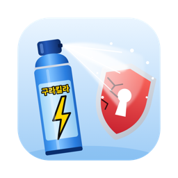

은행·공공기관 웹사이트 이용 시 설치되는 보안 프로그램을 확인하고 정리하는 macOS 앱.
맥에서 TouchEn nxKey, Veraport, 안랩 세이프 트랜잭션 등을 삭제할 때 사용.
대상 프로그램: TouchEn nxKey, Veraport, Delfino, INISAFE CrossWeb EX, CrossEX, AhnLab Safe Transaction, IPinside, MagicLine4NX, nProtect, AnySign4PC 및 제거 후 남은 파일.
SIP, Endpoint Security, MDM, Apple 구성 요소는 변경하지 않음. 관리자 권한이 필요한 작업은 실행할 명령을 먼저 표시한 뒤 macOS 암호 입력 창을 사용함.
.dmg 파일을 내려받음.1.0.2부터는 앱에서 바로 업데이트할 수 있음. 새 버전이 나오면 창 상단에 알림이 표시되고, 업데이트 버튼으로 교체 및 재실행함.
요구 사항: macOS 14 이상, Apple 실리콘 / Intel. 한국어, 영어 지원.
소스 코드: github.com/hjun1052/gurakilla
최종 수정: 2026-11-09